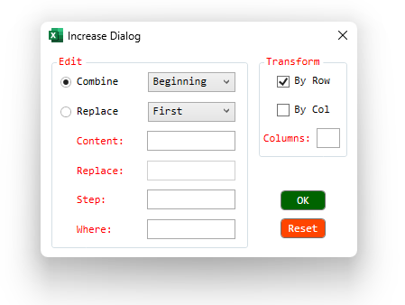

Cấu trúc hộp thoại như ảnh dưới:
1. Combine&Replace : Chọn kiểu tùy chỉnh STT (vd: đánh STT ở đầu (beginning) hoặc cuối văn bản).
2. Content : nội dung đánh STT (nếu đánh kiểu latin I, II,.. chuỗi phải có định dạng R-...).
3. Step : bước nhảy STT (mặc định là 1) ví dụ: step=2 sẽ cho kết quả 1, 3, 5,..
4. Where : lựa chọn vị trí các dòng sẽ đánh STT (dựa trên cú pháp Regex).
5. Transform : cho biết các STT được đánh theo từng hàng hay hàng-cột đồng thời.
6. Columns : cho biết số cột mới sẽ được tạo ra.
7. Reset : Khôi phục thiết lập ban đầu.
1. Tính năng này được chỉ được hỗ trợ ngoài phạm vi trang tính.
2. Không thể sử dụng song song đồng thời với tính năng Shortcut key.
3. Khi không còn sử dụng, Click vào Increase để tắt.
Xem Demo Video.
Related function
NUMBERTOWORDS (feature) Thiết lập phụ từ cho ứng dụng đọc số thành chữ (Ribbon).
FLOOKUP Nhập liệu nâng cao, hỗ trợ tra cứu (lọc) và xuất nhanh dữ liệu dựa trên từ khóa.
XGROUP Hàm mở rộng của GROUP. (hỗ trợ các hàm nâng cao).
Return to Home